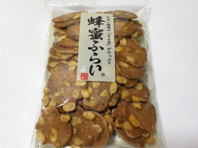
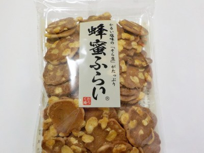
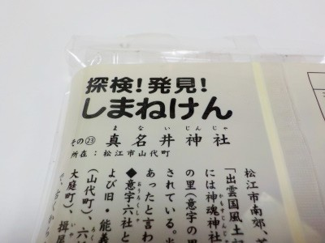
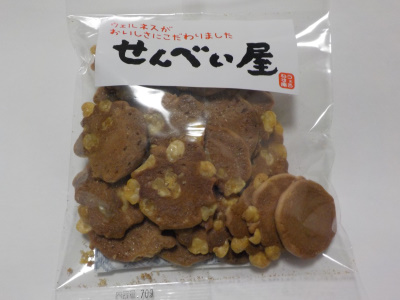

3時のおやつに松崎製菓の蜂蜜ふらいを食べました。
2023/01/04

豆菓子は美味しいですね。せんべいが甘くて豆が塩味で、甘辛です。
おやつにピッタリでした。
島根県松江市東出雲町出雲郷538-5
2023/01/04

豆菓子は美味しいですね。せんべいが甘くて豆が塩味で、甘辛です。
おやつにピッタリでした。
2022/04/16

ウエルネスのおせんべいのパッケージ違いかと思って買ったんですけど、なんか違う味でした。
ウエルネスビンズせんを買ってから2月以上経っているので味に自信がありませんが、こっちの方が甘くて塩分が少ないかな。
お酒のおつまみには少し向かないかなと思いました。お茶にいいですね。

袋の裏には歴史的な事が書かれていました。こうゆうのって読むのが苦手です。
読んでも全然頭に入らないです。
2022/01/07

ウエルネスでせんべいを買いました。
パッケージには「ウェルネスがおいしさにこだわりました」と書いてあります。
せんべいには塩の効いたソラマメが入ってて、味が濃くて美味しかったです。
個人的にはウエルネスで一番オススメの商品だと思いました。